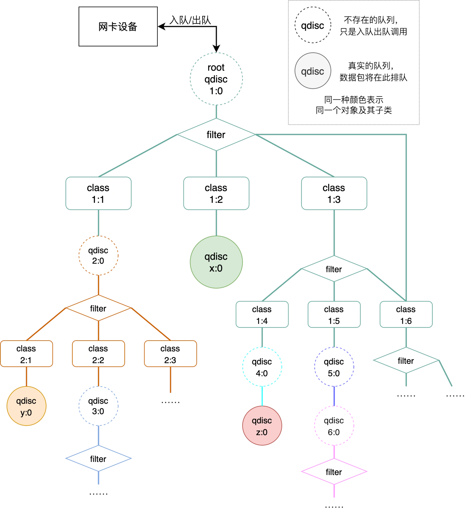

使用nftables和tc在linux上實現QoS
前言
在家中的網路會需要做QoS，主要是因為ISP的限速策略做的挺爛的，我家的ISP是屬於二級ISP，簡單來說就是他會和中華電信買幾條網路，在往下分租給整棟樓的人。
我家的網路是100/10Mbps (down/up)，與ISP的鏈路速度是100Mbps full duplex，下載當然沒什麼問題，就跑滿鏈路速度，但是上傳就有問題了，ISP允許客戶以鏈路速度進行上傳，但當滿速上傳時只要0.1秒就會達成速度上限，然後ISP就會直接drop掉你後面0.9秒的流量(大約)，這就導致只要有東西在上傳，那麼其他人的延遲會直接從 < 30ms，跳到 > 4000ms以上，所以只好在內部先對上行流量做完整型限制後再上傳，以此來控制延遲。
介紹
tc (traffic control)
tc一般都只對出站(egress)流量進行操作，雖然也可以對入站(ingress)流量進行操作，但相比出站的操作就少很多，所以如果要限制下載速度的話，一般就是在內網對應的網卡上進行限制(這裡的出站流量相當於內網的下載)
結構介紹
tc由三個部分組成
- qdisc (queueing discipline)： 隊列規則
- class： 類別
- filter： 過濾器
整體結構如下。

每個網路設備只會有一個根(root)的隊列規則(qdisc)，而qdisc又分為無類規則(Classless Qdisc)和有纇規則(Classful Qdisc)。
-
Classless Qdisc很簡單，他底下不會有手動創建的類別，流量怎麼排隊全看規則內部的設定，在systemd 217後，預設的規則是fq_codel，就是一種無類規則。
-
Classful Qdisc則是比較複雜，你可以在root qdisc底下創建各種不同的纇(class)，每個class可能對流量有不同的速度限制，而在class底下還可以放不同的class，或是在class底下再放一個qdisc，如果是Classful Qdisc，就可以在底下創建更多的class，因此Classful Qdisc可以達成較複雜、較精細化的流量控制。
而filter則是負責決定要將哪個封包丟到哪個class，如果class底下還有class，那就要被第二個filter決定要丟到更底下的哪個class，直到最後到達最底下的class，就會接受這個class底下的qdisc進行排隊(如果沒有給class設定最後的qdisc，會因為不同種類的parent qdisc會有不同的最終qdisc)
qdisc
常見的隊列規則如下，更詳細的介紹可以參考ArchWiki[2]，還有很多種隊列規則，各有不同的特性，有興趣可以自己去翻man page。
- Classless Qdisc
- fq： 公平隊列
- fq_codel： 結合公平隊列和延遲控制
- fq_pie： 結合公平隊列和pie
- codel： 延遲控制
- pie： Proportional Integral controller-Enhanced
- cake： Common Applications Kept Enhanced
- red： 隨機早期探測
- sfq： 隨機公平隊列
- pfifo： 先進先出
- pfifo_fast： 先進先出，但有分三個通道，直到高優先級的通道沒有封包，才會輪到低優先級的通道
- tbf： 令牌桶過濾，限速的好選擇[3]
- Classful Qdisc
- htb： 分層令牌桶，基本上要分區流量控制都是用這個
- cbq： Class Based Queueing
- prio： 優先級分類，不進行限速
filter
filter也有很多種規則，有興趣可以自己去翻man page。
基本上會用到的只有兩種過濾器，u32和fw。
u32會使用IP封包標頭的內容來過濾，簡單來說就是可以按照來源/目標位置、來源/目標端口來決定要分到哪個class。
fw就更好理解了，按照fwmark來決定要分到哪個class，舊型iptables就是這樣與tc配合進行流量限速
不過如果有使用nftables的話，就可以直接跳過filter了，nftables可以直接匹配後將封包直接塞到某個class裡，不需要進行mark再由tc分配，配合nftables的結構可以達成更好的效能和匹配。
handle/classid
handle/classid就是圖上顯示的x:y的數字，x和y都是可以允許最高16位的16進制數字。
每個qdisc都會有一個handle也就是x:0，也可簡寫為x:，而在這個qdisc底下的class就會有對應的classid x:y，這會是識別不同class的參數。
分配規則
以HTB為例，結構如下
- root qdisc HTB 1:0
- class 1:1 rate 2Mbit ceil 3Mbit prio 0
- class 1:2 rate 2Mbit ceil 8Mbit prio 1
- class 1:3 rate 1Mbit ceil 8Mbit prio 1
rate代表保證帶寬，ceil則是最高帶寬，prio代表優先級，0最高7最低，這個設備上傳總帶寬為10Mbit
當今天只有class 1:1在使用時，他可以使用最高3Mbit的帶寬，同理，只有class 1:2或1:3使用時，他們都可以使用8Mbit的帶寬，這些都小於總帶寬10Mbit。
但如果今天發生了爭搶，例如三個class都想要使用，那麼就會優先按照保證帶寬分配，所以每個class都會分到rate設定的值，現在剩餘帶寬還剩10-2-2-1=5Mbit，優先滿足高優先級，因此class 1:1可以使用3Mbit，此時還剩4Mbit的帶寬，由於class 1:2和1:3有相同優先級，因此會按照rate的比例來分配，class 1:2分到2+2.6Mbit，class 1:3分到1+1.4Mbit。
如果爭搶時連rate都無法滿足，就是優先滿足高優先級，相同優先級按照rate比例分配。
設定
我設定流量控制的目標是區分出少數需求帶寬少但高優先級的流量，以及設定對子網內每個IP的限速。
因此結構如下
- dev wan
- root qdisc HTB rate 10Mbit 1:0 default 0x100
- class 1:1 htb rate 10Mbit
- class 1:10 rate 2Mbit
- class 1:20 rate 2Mbit ceil 9Mbit prio 3
- class 1:90 rate 2Mbit ceil 9Mbit prio 6
- other IP class
- class 1:100 rate 2Mbit ceil 8Mbit prio 7
- class 1:1 htb rate 10Mbit
- root qdisc HTB rate 10Mbit 1:0 default 0x100
rate代表保證帶寬，ceil則是最高帶寬，prio代表優先級，0最高7最低。
class 1:10和1:20就是高優先級的class，未來可以再細分。
class 1:90就是用來對每個IP進行限速的class，每個IP都會被創立一個在1:90底下的class進行限速。
class 1:100就是沒有match到任何一個class的流量最後會到的地方，root qdisc指定的default 0x100。
腳本
因為tc的規則在重新啟動後會歸零，所以要使用腳本讓他在開機的時候可以重新生效。
初始設定
隨便找個地方放初始設定的腳本，像是/opt/traffic-control/tc-setting.sh，假設對外的網路設備是wan，上傳帶寬最大是10Mbit，如果環境不同，要自己修改適合自己的數值。
1 | |
腳本功能就是設定剛剛說的結構，腳本內只有設定qdisc和class，因為filter的部分會直接在nft做
將腳本加上執行權限chmod +x /opt/traffic-control/tc-setting.sh
編輯/etc/systemd/system/tc.service建立自動啟動服務，並啟用systemdctl daemon-reload ; systemdctl enable --now tc.service
1 | |
接著要調整nftables的設定，編輯/etc/nftables.conf(不要問我為什麼是在filter做流量的分類，nftables的wiki也這樣做)
1 | |
在forward鏈的這個規則，會匹配沒有被分類和沒有被打上fwmark的流量並幫他們打上分類，按照tc_classid裡的鍵值映射來幫對應的來源IP分類
這樣基礎的設定就完成了，不過分IP限速還沒生效，因為map tc_classid裡面沒有任何東西，所有的流量都會被歸類到1:100，按照他的規則限速，所以接下來要用自動執行的腳本自動新增IP和對應的class
自動限制
編輯/opt/traffic-control/arp-limit.sh，並加上執行權限chmod +x /opt/traffic-control/arp-limit.sh
1 | |
這個腳本會根據/proc/net/arp的arp記錄獲取lan底下的設備IP，並過濾Flags為0x2的值，這代表對應的IP在線
接著會幫每個IP建立在1:90底下的一個class，並加上限速和qdisc，id為1:fxxx，xxx是IP的最後一位，不會重複，並將IP和classid的對應加到nftables中
把這個腳本加到crontab的定期執行，要用root的，或是具有免密執行sudo tc和nft權限的user裡，/proc/net/arp30秒更新一次，因此每分鐘都執行檢查有沒有新設備
1 | |
有了新增規則的部分，也要有定期刪除規則的腳本
編輯/opt/traffic-control/delete-arp-limit.sh，並加上執行權限chmod +x /opt/traffic-control/delete-arp-limit.sh
1 | |
這個腳本會檢查有沒有Flags為0x0的記錄，代表設備下線，就將nftables、tc對應的記錄刪掉
這個腳本不需要執行的很頻繁，定期檢查即可
1 | |
這樣就完成限速的設定了